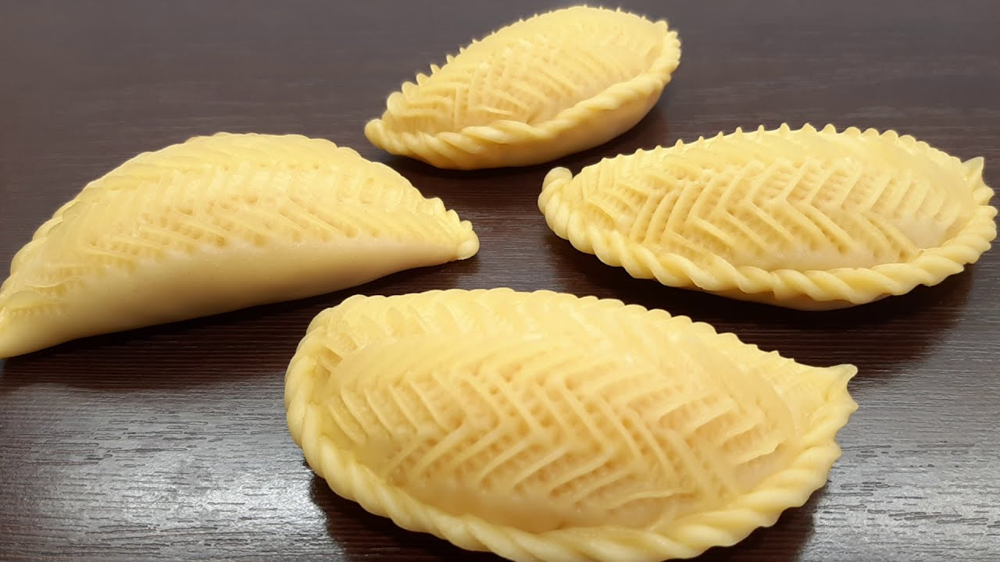

Şekerbura Azerbaycan Tatlısı
Nevruz zamanı geldiğinde Azerbeycan’ın birçok hanesinin fırınından nefis kokular yükselmeye başlar. Bu kokunun adı gibi şeker bir sebebi var. İsmini daha önce duymayanlarınız için hemen söyleyelim adını. Kendileri şekerbura.
Nevruz’da yapılma geleneği yıllarca sürmüş ve şekerbura sevgisi katlanarak artmış. Sadece Nevruz zamanı değil, artık herhangi bir zamanda da şekerbura yapılmaya başlanmış...
Şekerbura Tarifi İçin Malzemeler
- 3.5 - 4 Su bardağı un
- 1 su bardağı süt
- 180 gr tereyağı
- 1adet yumurta
- 1 tatlı kaşığı maya
- 2 yemek kaşığı yoğurt
- 1/2 çay kaşığı tuz
İç Harcı İçin
- 1 su bardağı ceviz içi
- 1.5 su bardağı şeker (azaltılabilir)
- 1 çay kaşığı kakule (dövülmüş)

* Şekerbura Tarifinin Püf Noktası
Hamuru hazırlarken hamurun daha ağızda dağılan bir kıvamda olmasını isterseniz 200 gram eritilmiş tereyağı kullanabilir, yoğurt ya da krema ilavesiyle lezzetini zenginleştirebilirsiniz.
Şekerbura Tarifi Nasıl Yapılır?
- Bir kabın içine maya ve sütü alın. Hafifçe karıştırın.
- Üzerine eritilmiş tereyağını ekleyin ve tel çırpıcı yardımıyla çırpın.
- Ardından yumurtayı ve dilerseniz kremayı (ya da yğurdu) ilave edin ve bir kez daha çırpın.
- Tuzu ve unu eleyerek sıvı malzemelerin üzerine azar azar ekleyin. Güzelce karıştırın.
- Ardından hamurunuzu tezgahın üzerine alın ve iyice yoğurun.
- Orta yumuşaklıkta bir hamur elde ettiğinizde üzerini kapatın ve yaklaşık yarım saat dinlenmeye bırakın.
- Bu sırada iç malzemelerini hazırlayın.
- Rondadan geçirdiğiniz cevizi bir kaba alın. Üzerine şeker ve kakuleyi ekleyerek karıştırın.
- Dinlenen hamurunuzundan parçalar koparın.
- Bu parçaları merdane yardımıyla hafifçe açın ve çay tabağından biraz daha büyük yuvarlaklar elde edin.
- İçlerini cevizli karışım ile doldurun ve yarım ay biçiminde kapatın
- Kapattığınız uç kısımdan başlayarak, kenarda artan parçaları içe doğru kıvırın ve örgü şekli verin.
- Üzerini ise aparat yardımıyla şekillendirmeye başlayın. Önce dikey çizikler atın. Ardından bu çizgilere zıt çizgiler oluşturun.
- Şekil verdiğiniz şekerburaları 180 derecelik fırında üstlerinin üzerinin çok kızarmamasına dikkat ederek pişirin.
- Çıkarıp biraz dinlendirdikten sonra afiyetle tüketin.